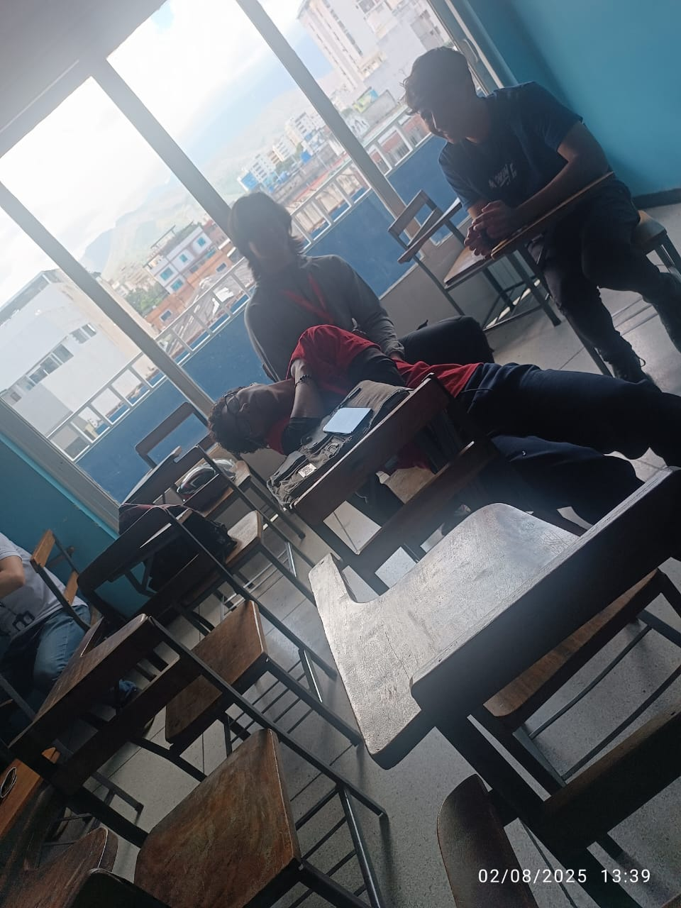
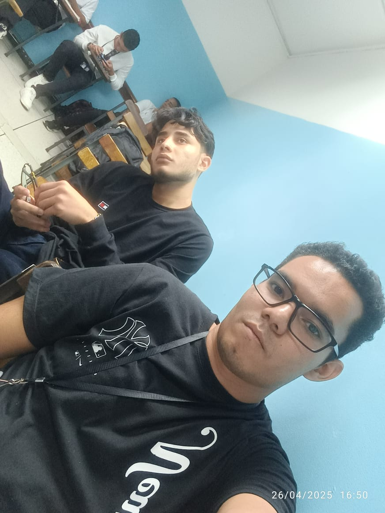

Un recuerdo especial de las personas que compartieron esta etapa académica conmigo. Con cariño, les dejo una dedicatoria a cada uno.
Edward Neyler Kevin
"Siempre recordaré su sentido de humor su forma de molestar a los profe sin querer. ¡Gracias por todo!"
grupo
"la tarde ya cansada y largar se hacian tediosar de estar gracias por la locuras de rato"
chicas de salon
"gracias por tolera a todas nuestra locura chicas son nuestra princesa apesar que la vemos como otro hombre por todo el tiempo en clase se el quiere full love"
samuelin
"Gracias por las risas y los buenos momentos en el aula. por el meme que se volvio tu hoja de vida experiencia laboral no poseo jajajaja exito papa ¡Gran compañero loco!"

ricado y Edward 2
"lo nuevo integrante de diurno no solo dire que gracias por estar y le deseo Mucho éxito en tus futuros proyectos!"
jhoa
"Las discusiones técnicas de lo culxx y de las cosas contigo siempre fueron locas jajaja un exito para ti mi amor

wistico
"el wiston el pana inquieto y que esta ansioso ese es gracias rey por todo gracias por tu chiste por estar por la compañia por los juego de pool"
grupo pro
"Santigo papa gracias por todo por permirme ir a tu casa en el servicio la hospitalidad eres tu jajaj, sebatias marcos el grupo pro de los debates marcos porque se la sabe todo y seba porque lo va a prender y sabe mas al final jajaj gracis por el apoyo en todo igual al pa de oscar"
yo
"Gracias a mi por logra llegar a donde estoy por mas asi se ha dicho"
Margaret
"Tu optimismo es contagioso. tu forma de ser tan atenta y a la vez regañona jajaja te extraño a ti a tu comentario y obivo el cafe de la mañana jejeje exitos "
laboratorio N 14
"las unica pc que de de verdad eres medio funcionales como dirian en el IUTA premium "
grupo mixto
primera foto del grupito del 4 cuatrimestre
cine
"la salida al cine para celebrar el pasar al 5 cuatrimestre no se podia quedar si hacer nada no señor con la chica y el juan se extrañaran esta salidas improvisada"
mensiones a los Compañeros
"cesar creo que no tengo mas foto contigo eres un poco callado y centrado en lo tuyo pero eres exeleten persona gracias por todo y exitos, marcos algunas veces eres fastidioso porque eres muy insistente pero esa tambien es tu virtud lucha por lo que quieres y desea papa que nadie te diga que no puedes, sebastian chamo ajaja exitos en la programacion cuidate ha y baja esa panza loco haz ejercicio cuida tu salud"
yo otra vez
"foto fastidiado numero 2 jajaja por eso momento que no volveran"
comiendo helados
"que esto momento sea recordados bonito como la union del grupo para logra nuesto estudios sueños y metas gracias chicos por ser parte de mi libro llamado vida"
servicio comunitario aprobado
"Un compañero incondicional es aque que esta para ti yo con todo puedo decir que nunca dije no eres compañero todo fueron incondicional y si le pedi ayuda o algo me trataro de ayudar gracias por ser y esta muchachos que este proyecto esta carrera y los cambios de la vida apaguen su ser, por nosotro por que culminamos esta etapa y somos TSU"
MI COMBO
"su sentido del humor hacía las clases más amenas no le digo los extrañaré porque ya son como mis hermano la verdad no se si yo lo sea para ustede pero para mi lo son en lo que pueda ayudalos los hares de corazon gracias por todo por las cana jajaj lo chiste malos el apoyo y la compañia se le quiere un monto"
servicio comunitario aprobado
"exitos futuro TSU todo esta es sus manos para ser exitosos"
fotito
"Fue un placer compartir esta etapa con ustedes. ¡les deseo lo mejor en tu camino!"